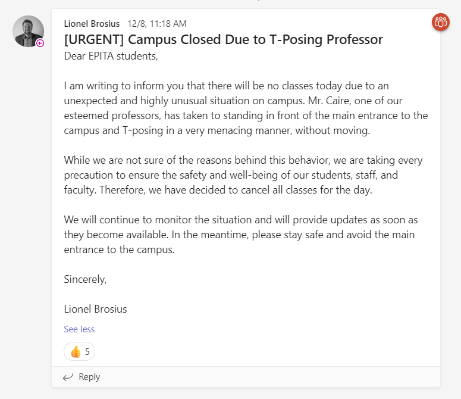
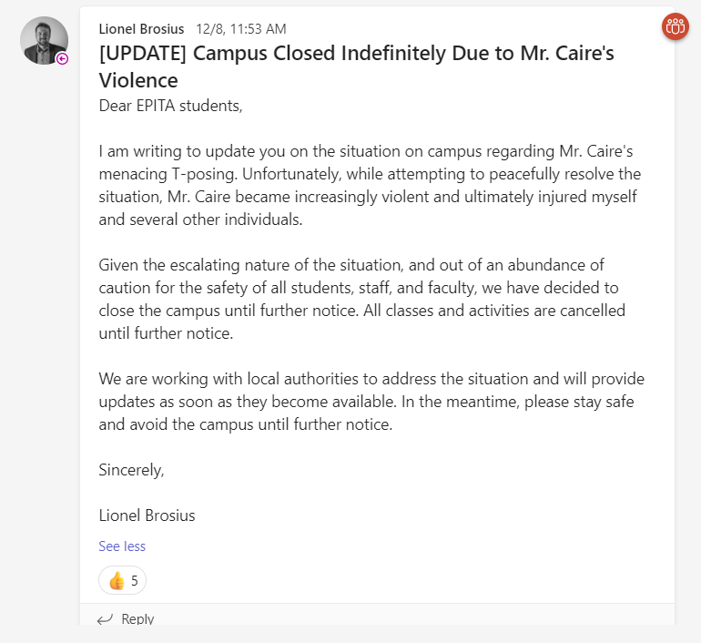
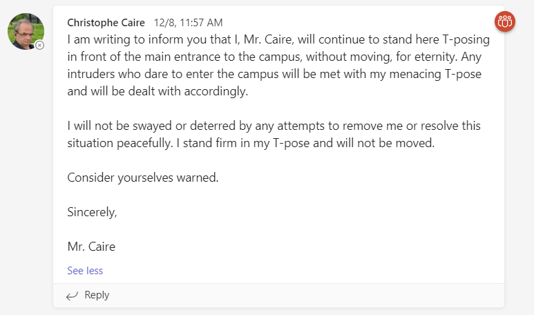

In a strange and unprecedented turn of events, the EPITA campus has been shut down due to the T-posing of one of the professors, Mr. Caire. The campus director, Lionel Brosius, sent out several messages to students and faculty explaining the situation and warning them to stay away from the main entrance to the campus, where Mr. Caire has been standing and T-posing without moving.
According to the messages, Mr. Caire has become increasingly violent and has injured several individuals, including Mr. Brosius himself. The authorities have been called in to address the situation and the campus has been closed until further notice.
Screenshots of relevant Microsoft Teams messages can be seen below:



The government recently released a statement regarding the situation:
Attention all citizens:
We are issuing a warning regarding a dangerous situation that has developed on the EPITA campus. A individual by the name of Mr. Caire has taken to standing in front of the main entrance to the campus and T-posing in a very menacing manner, without moving. He has injured several individuals and has threatened to T-pose on any intruders.
We strongly advise all citizens to avoid the area and not to approach Mr. Caire under any circumstances. The authorities are working to address the situation and will provide updates as soon as they become available.
Please stay safe and heed this warning.
Philippe Bouchet, a student at EPITA, had this to say during a TV interview:
Interviewer: Good evening, Philippe. Can you tell us what happened on the EPITA campus today?
Philippe Bouchet: Good evening. Yes, it was a very strange and unsettling day on campus. I was walking to class when I saw Mr. Caire standing in front of the main entrance, T-posing in a very menacing way. It was very strange and I had no idea what was going on.
Interviewer: What happened next?
Philippe Bouchet: Well, I tried to stay as far away as possible and avoided the main entrance. I heard later that Mr. Caire had become violent and injured several people, including the campus director, Lionel Brosius. It was really scary and I'm just glad that I wasn't close enough to get caught up in it.
Interviewer: How have the authorities responded to the situation?
Philippe Bouchet: They've closed the campus until further notice and are working to address the situation. I'm not sure exactly what's going on, but I hope that they can find a resolution soon. It's just a really strange and unsettling situation.
Interviewer: Thank you, Philippe, for sharing your experiences with us today. We'll continue to follow this story and bring you updates as they become available.
Philippe Bouchet: Thank you.
It is not yet clear what has led to Mr. Caire's strange behavior or when the campus will reopen. We will continue to follow this story and provide updates as they become available. In the meantime, we advise all students and faculty to stay safe and avoid the area.